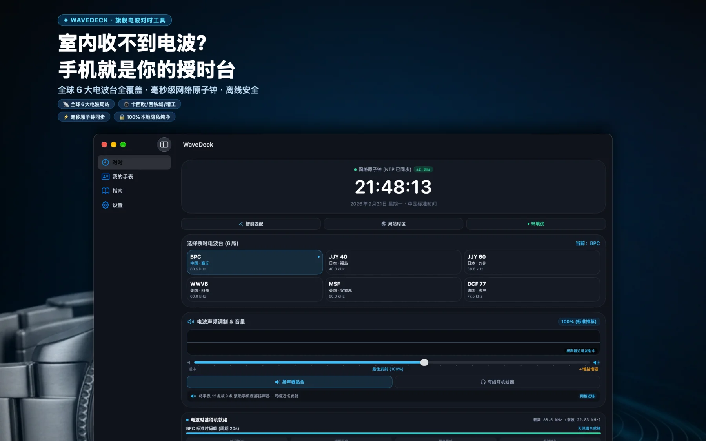
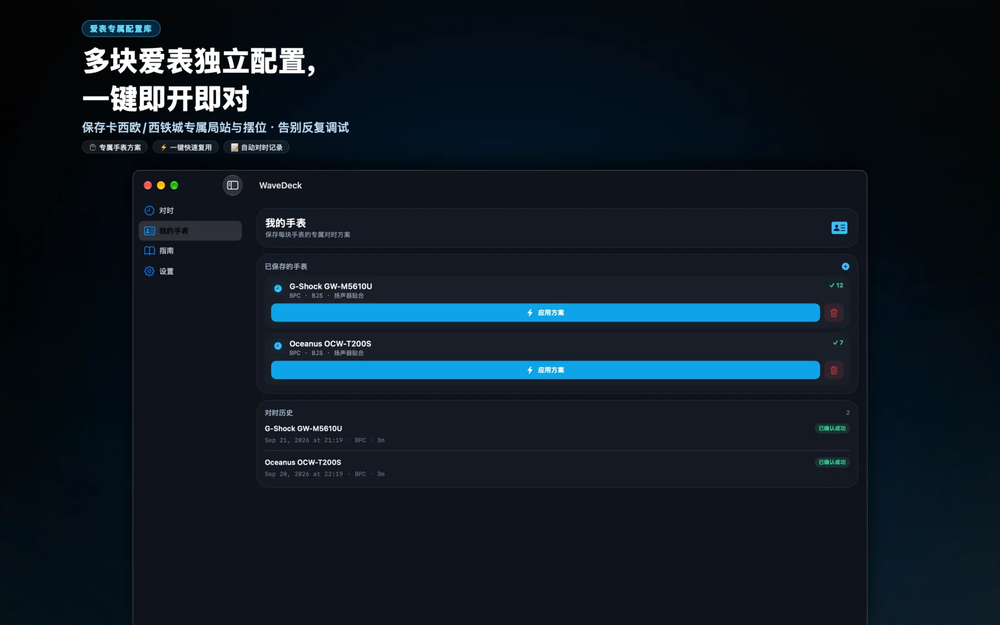
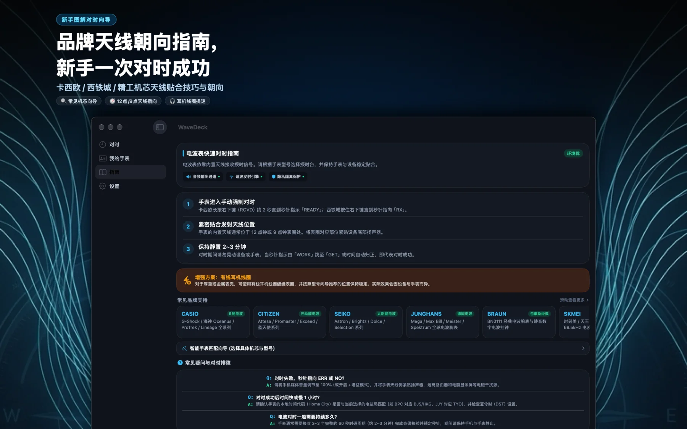

先找到你的表款
手动搜索，或拍摄、选择表背照片，在设备本地识别型号与机芯文字。匹配结果由你核对。

从型号匹配到发射记录，每一次尝试都有迹可循。
手动搜索，或拍摄、选择表背照片，在设备本地识别型号与机芯文字。匹配结果由你核对。
使用设备扬声器或有线耳机线圈。先检查音频路径、摆位与环境，再开始发射。
通过网络时间服务获取参考时间，查看同步状态、网络延迟与本地时钟偏差。
在本地保存手表设置和发射历史，结合已确认的接收结果获取下一步建议。

先准备好设置，再把接收结果交给手表确认。

核对手表型号、授时台及城市码，并让手表进入手动接收模式。
刷新时间参考，将手表天线靠近扬声器或有线耳机线圈，保持位置稳定。
等待接收完成，以手表上的结果为准；记录本次设置，便于下次复用。
无需账号。手表方案、发射历史和照片识别在设备上处理；网络校时会连接第三方时间服务。